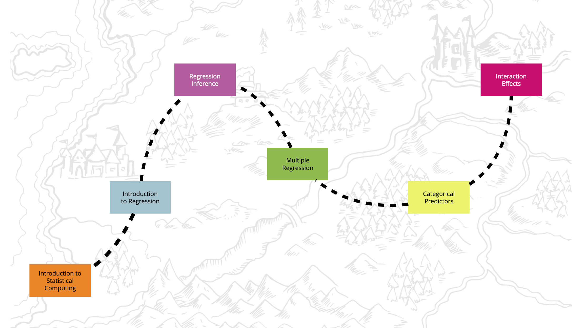

Fall 2023
Welcome to EPsy 8251: Statistical Methods in Education I
EPsy 8251: Statistical Methods in Education I is the first course in an entry-level, doctoral sequence for students in education. The two semester sequence provides in-depth coverage of widely used statistical methods and models and prepares students for advanced statistical coursework. EPsy 8251 provides rigorous coverage of estimation and hypothesis testing with a particular focus on the General Linear Model. The roadmap for the course is:

EPsy 8251 is a 3 credit course. It is expected that the academic work required of Graduate School and professional school students will exceed three hours per credit per week (see Expected Time per Course Credit Policy). In my experience, it is typical for students to spend 10–15 hours a week on this course. As with every class, some students will spend more time than that on this course, while others will spend less time than that—it all depends on your prior experiences with statistics and computing. If you find yourself consistently spending more than 20 hours a week on the course, please make an appointment to see the instructor so that we can strategize about how to best optimize how you are devoting time to the course.
A Note on Inclusion and Respect
In this class, we will work together to develop a learning community that is inclusive and respectful, and where every student is supported in the learning process. As a class full of diverse individuals (reflected by differences in race, culture, age, religion, gender identity, sexual orientation, socioeconomic background, abilities, professional goals, and other social identities and life experiences) I expect that different students may need different things to support and promote their learning. The TAs and I will do everything we can to help with this, but as we only know what we know, we need you to communicate with us if things are not working for you or you need something we are not providing. I hope you all feel comfortable in helping to promote an inclusive classroom through respecting one another’s individual differences, speaking up, and challenging oppressive/problematic ideas. Finally, I look forward to learning from each of you and the experiences you bring to the class.
Classroom
- Monday/Wednesday (2:30pm–3:45pm): Scott Hall 4
Textbooks
The course textbook is available via the University of Minnesota library.
- Required: Lewis-Beck, C., & Lewis-Beck, M. (2016). Applied regression: An introduction. Thousand Oaks, CA: Sage. doi: 10.4135/9781483396774
There are two other free, online books that the lectures for the class are drawn from:
- Computational Toolkit for Educational Scientists
- Statistical Modeling and Computation for Educational Scientists
Course Requirements and Grading
Students will complete eight homework assignments. The homework assignments and due dates will be posted on the Assignments page of the course website. These assignments include problems that will help you learn the course material through reflection and practice. Submit each assignment as a PDF file via email to the TA.
To foster cooperation and collaboration, you are permitted to form groups of no larger than three to work on the homework. Submit only one assignment per group, and list the names of each group member on the assignment. Each assignment will be scored and this score will be given to all individuals in the group. From past experience, student collaborations work most fluidly when everyone in the group has chosen the same grading option for the course (e.g., A/F, S/N, etc.).
If you work alone on the assignments, you need to truly work alone. To protect against running afoul of the scholastic dishonesty policy, students working alone are not permitted to interact with any other student in regards to the assignment, including discussion, obtaining help, etc.
ChatGPT and Other AI
Artificial intelligence (AI) language models, such as ChatGPT, may be used to help you write R syntax with appropriate citation, but not for answering any of the questions on the assignment. If you are in doubt as to whether you are using AI language models appropriately in this course, I encourage you to discuss your situation with me or the TA. Examples of citing AI language models are available at: https://libguides.umn.edu/chatgpt. You are responsible for ensuring any syntax composed by AI is correct.
Policy for Missing Class and Making up Missed/Late Work
Students are responsible for planning their schedules to avoid excessive conflicts with course requirements and must notify the instructor of unavoidable scheduling conflicts as early as possible. For circumstances where absences are unavoidable, accommodations for makeup work will be made according to University Policy. If you miss class:
- Email the instructor as soon as you know you will be missing class.
- Students are expected to obtain notes from a classmate of class material missed.
- Please note that I will not be recording class sessions at the request of individual students, nor will I be Zooming students in to the class. Although, if you can arrange it with a classmate, they can Zoom you in.
- If you are zooming in a classmate, please let the instructor know.
- If you will be gone the day an assignment is due, you will need to make arrangements with the instructor about when you will turn in the assignment.
If you do not communicate with the instructor and make arrangements for turning in work when you are absent, the assignment will receive a 0.
Evaluation of Student Performance
Course grades will be based entirely on performance on the homework assignments. The points from the eight homework assignment will be pooled to compute a percentage in the class, which will be converted to a final course grade using:
| Cutoff | Grade | Definition for Graduate Credit |
|---|---|---|
| 93%–100% | A | For exceptional work, well above the minimum criteria |
| 90%–92% | A– | For outstanding work, well above the minimum criteria |
| 87%–89% | B+ | For excellent work, significant above the minimum criteria |
| 83%–86% | B | For work above the minimum criteria |
| 80%–82% | B– | |
| 77%–79% | C+ | |
| 73%–76% | C | For work which meets the course requirements in every respect |
| 70%–72% | C– | |
| 63%–69% | D | Worthy of credit even though it fails to meet the course requirements |
| 0%–62% | F | Failed to meet minimum course requirements |
If you are taking the course S/N, the minimum criterion to receive an S is 80% (the equivalent of a B– letter grade). The S grade does not carry grade points and is not part of the GPA calculation, but the credits will count toward the student’s degree program if allowed by the college, campus, or program.
Any student who does not complete all homework assignments without making prior arrangements with the instructor will receive a grade of F/N.
Incomplete
Instructors may assign the registration symbol “I” for Incomplete if, at the time the incomplete is requested: (1) the student has successfully completed a substantial portion of the work of the course; and (2) due to extraordinary circumstances (as determined by the instructor), the student was prevented from completing the work of the course on time. The assignment of an “I” requires a written agreement with the student specifying the time and manner in which the student will complete the course requirements. For more information see Grading and Transcripts.
Accessing Course Grades
Shortly after the course, you may access your grades online at myU. Assignments will be handed back in class or during office hours. Uncollected assignments will be retained for six weeks after the course and then discarded.
Stress Management
Stress management is an important piece of the skill set needed for success in graduate school. Pet Away Worry & Stress (PAWS) is one of the many resources available to students. Find out more at https://boynton.umn.edu/paws.
You can follow Tilly the Therapy Chicken on Twitter (@TherapyChicken).
Statistical Computing
Statistical computing is an integral part of statistical work, and subsequently, EPsy 8251. To support your learning in this area, this course will emphasize the use of R. R is a free software environment for statistical computing and graphics. It compiles and runs on a wide variety of UNIX platforms, Windows and MacOS https://www.r-project.org. It should be noted that while some R syntax and programming is taught during class time, there is also a fair amount that you may need to learn on your own outside of class. There are several tutorials and resources linked from the course website to help you learn R.
You can install R and RStudio onto your local machine. (There are instructions for how to do this on the course website.) You are responsible for getting things to work on your computer. While it should be straightforward, each OS and computer has their quirks. I can try to help you with this if you are having trouble.
Technology Policy
The course uses technology on a regular basis during both instruction and assessments (e.g., homework assignments, exams, etc.). Student difficulty with obtaining or operating the various software programs and technologies—including printer trouble—will not be acceptable as an excuse for late work. Due to the variation in computer types and systems, the instructor or TA may not be able to assist in trouble shooting all problems you may have.
CEHD Policy on Recording Classes
All class sessions may be recorded by the instructor using the procedures in the CEHD Policy on Recording Classes, with or without prior notice. Students should assume that a class session is being recorded unless otherwise notified. No person (student or otherwise) may record a class without express written permission from the instructor or an authorized administrator implementing a disability accommodation. All permitted recordings are governed by this policy’s limits on distribution and redistribution of recordings.
Image Attribution
- The icon in the Inclusion Note was created by Freepik - Flaticon.
- The icon in the Technology Policy was created by Freepik - Flaticon.
- The icon of Tilly the Therapy Chicken in the Stress Managment note is used with permissin of the PAWS program.
- The icon in the CEHD Policy on Recording note was created by Hilmy Abiyyu A. - Flaticon.
- The icon in the Missing Class Policy was created by Freepik - Flaticon.